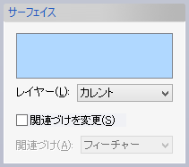
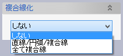
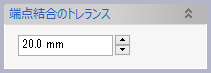

交線(スケッチ)
交線(スケッチ)
サーフェイスやソリッドとスケッチ平面の交線をスケッチの線として作成します。
操作方法
交線をとる要素(複数可)を選択して、OKボタンで実行します。
ボディ（シート、ソリッド）、フェイスが選択できます。
パラメータ

- レイヤー
作成される要素のレイヤーを指定します。
- 関連づけを変更
チェックすると、選択した要素と作成された交線との関連を変更できます。既定値は「フィーチャー」です。
- 複合線化


- しない
スケッチ平面上に作成されたカーブを複合線にしません。
- 直線/円弧/複合線
スケッチ平面上に作成されたカーブのうち、直線と円弧は独立した要素のまま、それ以外はつながっているカーブ群をひとつの複合線にします。カーブがつながっているかどうかの判定に使うトレランスを指定できます。
- 全て複合線
スケッチ平面上に作成されたカーブを、その種類にかかわらず、つながっていたら複合線にします。カーブがつながっているかどうかの判定に使うトレランスを指定できます。
- しない